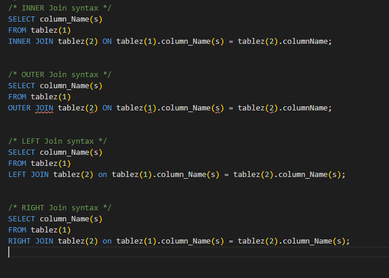

selects records that have matching results from 2 given tables
only Returns the matches
Returns all records when there is a match in either left(table) or right(table2)
can be a huge data set
Returns all the data from the left table even if no matches + all the matches from the Right table
Returns all the data from the right table even if no matches from the left table...+ the matches from the left table
Subroutine that contains a collection of SQl statements
Saves time and resources...especially with complex logic
A RDBMS is a system that organizes data into tables called relations, which are further organized into columns (fields) and rows (often called tuples).
The relational model allows data to be queried in a nearly unlimited number of ways, making it great for sorting through large volumes of data.
Common SQL dialects include PL/SQL for Oracle, T-SQL for MS SQL, and JET SQL for MS Access. Look up any particular dialects used for your chosen RDBMS.
INSERT: Creates records. The “Create” in CRUD.
SELECT: Retrieves records. The “Read” in CRUD.
UPDATE: Modifies records. The “Update” in CRUD.
DELETE: Deletes records. The “Delete” in CRUD.
Data Definition Language (DDL)
CREATE: Creates a new object.
ALTER: Alters an existing object.
DROP: Deletes an existing object.
Data Control Language: (DCL)
GRANT: Grants privileges to users.
REVOKE: Revokes privileges previously granted to a user.
CREATE
READ
UPDATE
DELETE
An inner join is when you combine rows from two tables and create a result set based on the predicate, or joining condition. The inner join only returns rows when it finds a match in both tables.
An outer join will also return unmatched rows from one table if it is a single outer join, or both tables if it is a full outer join.
Constraints are rules you can place on columns or tables to limit the type of data that can be entered into a table.
This prevents errors and can improve the accuracy and reliability of the database as a whole.
The primary purpose of normalization is to make databases more efficient by eliminating redundant data and ensuring data dependencies are coherent
Storing data logically and efficiently reduces the amount of space the database takes up and improves performance.
The set of guidelines used to achieve normalization are called normal forms, numbered from 1NF to 5NF. A form can be thought of as a best-practice format for laying out data within a database.
Boxing is the process of converting a value type to the type object (integer into an object)
Boxed values use more memory and require memory lookups to access.
Unboxing extracts the value from the object
A monolithic architecture means that your app is written as one cohesive unit of code whose components are designed to work together, sharing the same memory space and resources.
A microservice architecture means that your app is made up of lots of smaller, independent applications capable of running in their own memory space and scaling independently from each other across potentially many separate machines.
Monolithic Pros:
Monolithic Cons:
Microservice Pros:
Microservice Cons:
Positive attitudes toward microservices, despite the higher initial cost vs monolthic apps. Aware that microservices tend to perform and scale better in the long run.
Structure the app so that services are independent from each other at the code level, but easy to bundle together as a monolithic app in the beginning. Microservice overhead costs can be delayed until it becomes more practical to pay the price.